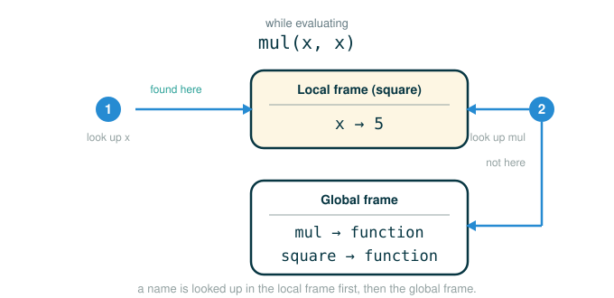

1.3 Defining New Functions: Definitions, Calls, and Environment Frames
Up to now you have been a tool user. You called functions that someone else built — max, pow, add, mul — and you learned to read a call expression as "find this function, hand it these arguments, take the value it gives back." This lesson turns you into a tool maker. By the end you will be able to do four things: write a def statement that builds a brand-new function, explain exactly what Python does the instant it reads that def, trace what happens when you later call your function, and draw the environment frames that make the whole machine work.
The single habit to build here is separating two events that beginners constantly fuse: defining a function and calling it. They happen at different times, do different work, and leave different marks on the program's state. Keep them apart and almost everything else in this lesson falls into place.
A Recipe Card Is Not a Cooked Meal
Imagine you write a recipe card titled "square." On the card you write: take whatever number you are given, multiply it by itself, and report the result. Writing that card does not cook anything. No number gets multiplied. You have simply created a reusable instruction and filed it under a name.
Later, someone walks up and says "square, applied to 21." Only now does work happen. You pull the card, you treat 21 as the number you were given, you follow the steps, and you report 441. Then you put the card back, unchanged, ready for the next request, which might be "square, applied to 3."
That is the entire shape of this lesson. A def statement is writing the card. A call expression is handing the card a specific value and following it. The two are so different that we will say it plainly and keep it nearby:
Defining a function builds the function and files it under a name.
Calling a function pulls that function and runs it on a specific value.The recipe-card image also explains why one card can serve many meals. The card never stores "the number is 21." Each request brings its own number, used for that request only. In Python, that "own number for this request only" is what a local frame is, and it is the heart of the second half of this lesson.
The def Statement: Building a New Function
In Python, you build a new function with a def statement. Every def statement has the same general form. We write it as a template, with angle brackets marking the slots you fill in:
def <name>(<formal parameters>):
return <return expression>That template has three slots, and each one has a distinct job:
- The name is the label the function is filed under. You use this name later to call the function, exactly the way you already use
maxoradd. - The formal parameters are names for the inputs. They are placeholders. They give the function a way to talk about "the number I was given" without knowing yet what that number will be.
- The return expression is the expression the function evaluates and hands back when it is called. Its value becomes the value of the whole call.
The colon at the end of the header line announces that an indented body follows. The indentation is not decoration. In Python, indentation is how the language physically marks which lines live inside the function. A line is part of the function's body precisely because it is indented under the def header.
Here is our first real def statement. We bring in mul so we can multiply, then define square:
# (1)
from operator import mul
def square(x):
return mul(x, x)
Read the header line one piece at a time. This follow-the-line format — show the line, then split it into parts where each row says what that part does — is how we will dissect every new construct in this course.
def square(x):
├─ def ......... begins a function definition (build a new function)
├─ square ...... the name the new function is filed under
├─ ( ........... opens the list of formal parameters
├─ x ........... one formal parameter: a placeholder for the input
├─ ) ........... closes the parameter list
├─ : ........... announces the indented body that follows
└─ the result a function named square that takes one input, now filed under "square"And the body line, which is the recipe's single step:
return mul(x, x)
├─ return ...... hand a value back to whoever called this function
├─ mul ......... the multiplication function brought in by the import
├─ (x, x) ...... call mul with the input twice as its two arguments
└─ evaluates to whatever x times x is, sent back to the callerNotice that the final branch describes what the line achieves, not merely its name. For the header, the action is "a function now exists and is filed under square." For the body, the value is "x times x, sent back." We end every anatomy this way: an action for a statement, a value for an expression.
What Python Does the Instant It Reads def
This is the most important paragraph in the lesson, so slow down. When Python executes (1), it does not run return mul(x, x). It does not multiply anything. There is no x with a value yet. Executing a def statement does exactly two things, and only these two:
- It builds a function value from the name, the formal parameters, and the body.
- It binds the function's name in the current environment to that function value.
After (1) runs, the program's state — its environment — looks like this. Picture a table, called the global frame, that lists names and the values they point to:
Global frame
mul -> multiplication function
square -> function square(x)That is the whole effect. The name mul points to the built-in multiplication function (from the import), and the name square now points to the function we just built. The formal parameter x is nowhere in this picture. It has no value. It is a placeholder that will receive a value only when square is actually called.
It is worth saying what is not there. There is no line that computed anything. There is no x -> 21. There is no 441. The body — return mul(x, x) — has not been touched. It is text on the recipe card, waiting. The kitchen does not start cooking just because a card exists. All of that waiting work begins only when a call expression like square(21) appears.
Calling a User-Defined Function
Now we call the function:
# (2)
square(21)
The good news: you already know the rule for evaluating a call expression, and Python uses the exact same rule whether the function is built-in or one you defined.
square(21)
├─ square ...... evaluate the operator: look up square, find the function
├─ ( ........... begins the arguments
├─ 21 .......... evaluate the operand: the integer 21
├─ ) ........... ends the arguments
└─ evaluates to 441What is new is the final step — applying the function — when the function is one you wrote. To apply a user-defined function to its arguments, Python follows a precise two-step procedure:
- Bind the arguments to the names of the function's formal parameters, in a new local frame.
- Execute the body of the function in the environment that begins with this new frame.
So calling square(21) first creates a fresh local frame and binds the formal parameter x to the argument 21:
Global frame
mul -> multiplication function
square -> function square(x)
Local frame for square
x -> 21Then Python executes the body in that environment. It evaluates the return expression:
return mul(x, x)Inside this local frame, x is 21, so Python computes
and square(21) produces:
441The word return means the value travels back to wherever the call appeared. At the prompt, Python displays the returned value. Inside a larger expression, the returned value becomes one piece of that larger expression — which is exactly what lets you nest calls, as we will see in a moment.
The local frame is temporary. Walk the life cycle of this one call:
Call begins: create a local frame, bind x -> 21
Body runs: evaluate mul(x, x) in that frame
Return: send 441 back to the caller
Call ends: the local frame is no longer activeThat temporariness is the whole point of local frames. It is what lets the same function run again and again — square(3), then square(10), then square(21) — without the calls colliding. Each call gets its own private frame, its own private x, and then throws it away.
Parameters Versus Arguments
Two words name the two sides of this exchange, and confusing them is one of the most common beginner stumbles.
# (3)
def square(x):
return mul(x, x)
square(21)
In (3):
xis the formal parameter. It lives in the definition. It is the labeled empty slot.21is the argument. It lives in the call. It is the actual value supplied for this one use.
The parameter is the labeled empty cup; the argument is the liquid poured into it for a single use of the recipe. The reason the distinction earns its own section is that one parameter name serves many different arguments across many different calls:
square(3) creates a frame where x -> 3
square(10) creates a frame where x -> 10
square(21) creates a frame where x -> 21The name x is reused, but there is no single permanent x sitting inside the function between calls. There is a brand-new local binding for x every time the function is called. Hold that thought; it is exactly what makes the nested-call example below work.
When the Argument Is an Expression
An argument does not have to be a literal value. It can be any expression. Python's rule is firm: it must know the value of the argument before it can apply the function, so it evaluates the argument first.
# (4)
from operator import add, mul
def square(x):
return mul(x, x)
square(add(2, 5))
The official transcript for this call is:
>>> square(add(2, 5))
49Here is why. Python cannot enter square until it has a concrete value for the argument, so it first evaluates the operand:
add(2, 5) -> 7Now the call effectively becomes square(7). A local frame is created with x bound to 7, the body computes , and the result is:
49When a Function Is Nested Inside Itself
Because a returned value can serve as a piece of a larger expression, you can feed the result of one call straight into another. Watch what happens when both functions are square:
# (5)
square(square(3))
The official transcript:
>>> square(square(3))
81Python evaluates from the inside out, because the outer call needs a value for its argument before it can run. The inner call goes first:
square(3) -> 9Then the outer call becomes square(9):
square(9) -> 81so the whole expression produces:
81The two calls to square are entirely separate events, and this is where the "fresh local binding every call" idea pays off. Each call builds its own local frame with its own x:
Call 1: square(3)
Local frame A
x -> 3
return 9
Call 2: square(9)
Local frame B
x -> 9
return 81Same parameter name, two independent frames, two independent values of x. Neither call can disturb the other.
Building a Function Out of Other Functions
The real power arrives once a function has a name: you can use it inside the definition of another function, the same way you used mul. We define sum_squares, which squares two numbers and adds the results:
# (6)
from operator import add, mul
def square(x):
return mul(x, x)
def sum_squares(x, y):
return add(square(x), square(y))
The body of sum_squares calls square twice and feeds both results to add:
return add(square(x), square(y))
├─ return ........... hand a value back to the caller
├─ add .............. the addition function
├─ square(x) ........ square the first input
├─ square(y) ........ square the second input
└─ evaluates to the sum of the two squares, sent back to the callerNow call it:
# (7)
sum_squares(3, 4)
The official transcript:
>>> sum_squares(3, 4)
25Trace it. Applying sum_squares creates a local frame binding both formal parameters:
sum_squares(3, 4)
x -> 3
y -> 4Executing the body evaluates each piece in turn. Each square(...) is itself a call, so each one spins up its own local frame, runs, and returns:
square(x) -> square(3) -> 9
square(y) -> square(4) -> 16
add(9, 16) -> 25So sum_squares(3, 4) returns:
25Notice the layering: while sum_squares is running, a call to square opens, runs, and closes; then a second call to square opens, runs, and closes. Functions calling functions is just frames opening and closing in a nested order.
To make that layering unmistakable, the original text walks through one more call to sum_squares — this time with the arguments 5 and 12 — frame by frame. The setup is the same two definitions, with the call stored in a name:
# (8)
from operator import add, mul
def square(x):
return mul(x, x)
def sum_squares(x, y):
return add(square(x), square(y))
result = sum_squares(5, 12)
The official transcript for the call itself is:
>>> sum_squares(5, 12)
169Follow the frames in the exact order Python opens them. Python first evaluates the name sum_squares, found in the global frame, and the operands 5 and 12, which evaluate to themselves. Applying sum_squares introduces a local frame that binds both parameters:
Global frame
add -> addition function
mul -> multiplication function
square -> function square(x)
sum_squares -> function sum_squares(x, y)
Local frame for sum_squares
x -> 5
y -> 12The body is return add(square(x), square(y)). Both operands must be evaluated before add runs. Operand 0 is square(x): here square is found in the global frame and x is 5 in the local frame, so Python applies square to 5 by opening another local frame that binds its own x to 5:
Local frame for square
x -> 5Using that environment, mul(x, x) evaluates to 25. Python then turns to operand 1, square(y), where y is 12. It evaluates the body of square again, opening yet another local frame that binds x to 12, so operand 1 evaluates to 144:
Local frame for square
x -> 12Finally, applying addition to the two arguments yields the return value of sum_squares:
add(25, 144) -> 169so sum_squares(5, 12) produces:
169This is the example the source uses to make one point unforgettable: all three local frames — the one for sum_squares and the two for square — contain a binding for the name x, but x is bound to a different value in each. A new local frame is introduced every time a function is called, even when it is the same function, and that is exactly what keeps the three x values from colliding.
A Closer Look at Environments and Frames
Everything above rests on one structure, so let us name it carefully. An environment is a sequence of frames. Each frame is a table of bindings, where a binding associates a name with a value. There is exactly one global frame, created when your program starts; it holds names bound by imports, by def statements, and by top-level assignments. Every time a user-defined function is applied, a new local frame is created to hold that call's parameter bindings.
The original text starts with the simplest possible case, where the whole environment is just the global frame. Import and assignment statements add entries to it:
# (9)
from math import pi
tau = 2 * pi
After these two lines run, the global frame holds two bindings — one added by the import, one added by the assignment:
Global frame
pi -> 3.1416
tau -> 6.2832That is an environment diagram: a picture of the current environment's frames and the values each name is bound to. Functions appear in these diagrams too — an import statement binds a name to a built-in function, and a def statement binds a name to a user-defined function — which is exactly what we saw when mul and square showed up in the global frame earlier.
The one rule that ties names to values is this: a name evaluates to the value bound to it in the earliest frame of the current environment in which that name is found. While a function runs, its local frame comes first, and the global frame follows. So Python looks in the local frame first; if the name is not there, it looks in the global frame. The picture below shows both halves of that search happening at once while a call evaluates mul(x, x): the name x is found right away in the local frame, while mul is missing there and the search falls through to the global frame.

The original text draws this with square(-2). After importing mul and defining square, the global frame holds the two bindings; calling square(-2) adds a local frame for that call:
Global frame
mul -> multiplication function
square -> function square(x)
Local frame for square
x -> -2Inside that local frame, the name x is found immediately and evaluates to -2, so the body computes and the call returns 4. The name mul, however, is not in the local frame, so Python looks in the next frame — the global frame — and finds the multiplication function there. That single example shows both halves of the lookup rule at once: a parameter resolved locally, a function name resolved globally.
A function name actually appears twice in these diagrams: once in the frame, as the binding square -> function square(x), and once inside the function value itself. The source gives the two appearances names. The name inside the function value is the function's intrinsic name; the name in a frame is its bound name. The difference matters: several different names may be bound to the same function, but the function carries only one intrinsic name. Crucially, it is the bound name that Python uses when it looks a function up to call it — the intrinsic name plays no part in evaluation. (This is exactly why the f = max / max = 3 example later in this lesson behaves the way it does.)
The (x) written next to square in the diagram is also worth naming. A description of the formal parameters a function takes is called the function's signature. The signature square(x) records that square takes exactly one argument; supplying more or fewer is an error. Built-in functions are drawn with a signature like mul(...), because they were never defined with named parameters in Python — the ... stands in for "however many arguments this primitive accepts."
This is why an environment diagram is more than a drawing exercise. It answers the only question that ever matters when Python reads a name: right now, in the current environment, what value does this name find?
Names in Environments Can Be Rebound
A function name is, in the end, just a name in a frame — and any name can be bound to a new value later. Both def statements and assignment statements bind names, and when they do, any earlier binding for that name is lost. The original text shows this with a name g that changes meaning three times.
First, g is defined as a function that takes no arguments and returns 1, and calling it returns 1:
>>> def g():
return 1
>>> g()
1Then g is reassigned to an integer. Now the name no longer refers to any function:
>>> g = 2
>>> g
2Finally, the same name is defined as a brand-new function — this time taking two parameters and returning their sum — and calling it returns 3:
>>> def g(h, i):
return h + i
>>> g(1, 2)
3The lesson is not "reuse names freely" — in practice you usually should not. The lesson is that Python always uses the current binding for a name. The letters g never changed; what changed each time was the value that g was bound to in the global frame: first a no-argument function, then the integer 2, then a two-argument function. An environment diagram makes that history visible, which is exactly why we draw it.
The same idea has a sharp edge that the original text demonstrates with the built-in max. Because only the bound name in a frame is used during a call, rebinding that name to a non-function makes it impossible to call:
# (10)
f = max
max = 3
result = f(2, 3, 4)
max(1, 2) # Causes an error
Read it line by line. f = max binds f to the very same function max is bound to — now two names point to one function. max = 3 rebinds the name max in the global frame to the integer 3; the function it used to point to is untouched, and f still points to it. So f(2, 3, 4) works and binds result to 4. But the last line tries to use max as the operator of a call, and max is now the number 3:
>>> max(1, 2)
TypeError: 'int' object is not callableThe error says exactly what went wrong: the name max is currently bound to an integer, not a function, so it cannot be used as the operator in a call expression. This is the intrinsic-name-versus-bound-name distinction in action. The function still has its one intrinsic name, and f can still reach it — but the bound name max no longer leads to a callable value.
⚠Common Beginner Traps
| Mistake | What Goes Wrong | Safer Question |
|---|---|---|
Expecting def to run the body right away |
Python only builds the function object and waits; nothing computes until a call appears | Where is the line that actually calls the function? |
| Writing the name without parentheses | No call happens; the expression evaluates to the function object itself, such as <function square at 0x...>, instead of the result |
Did I add the parentheses that actually perform the call? |
Omitting the colon after the def header |
Python raises SyntaxError: expected ':' before the function is ever built |
Did I end the header line with the colon that announces the body? |
Forgetting return |
The function ends and hands back None automatically, so the caller receives None, not the value you expected |
What value should the caller receive? |
| Confusing parameters and arguments | The definition and the call get read as if they were one line | Which names are placeholders in the definition, and which values are supplied at this call? |
| Misplacing indentation | A line ends up outside the body, or Python raises an IndentationError |
Which lines should belong to this function's body? |
Assuming one permanent x lives in the function |
Two calls are imagined to share a value they never share | Does each call get its own local frame and its own binding? |
| Rebinding a function name by accident | A later assignment or def replaces the function with another value, so a later call raises TypeError: 'int' object is not callable (or similar) |
What is this name bound to at the moment of the call? |
✓Check Your Understanding
- Using the definitions of
squareandsum_squares, how many local frames open in total whensum_squares(2, 3)is evaluated, and what value does the call return? - What new frame is created when
square(21)is called, and what binding does it hold? - In
def square(x): ..., what isx, and insquare(21), what is21? - Why do the two calls in
square(square(3))get separate local frames, and what value does each return? - While
squareis running, the namexis found in its local frame butmulis not. Where does Python findmul, and what rule is it following? - After
g = 2, why does the namegno longer call the function defined earlier?
Show the answers
- Three local frames open: one for the call to
sum_squares(bindingx -> 2,y -> 3), and one for each of the twosquarecalls (bindingx -> 2, thenx -> 3). The call returns13, since . - A local frame for that call to
square, holding the bindingx -> 21. xis the formal parameter (the placeholder in the definition);21is the argument (the value supplied for this call).- Each call is a separate event, so Python creates a fresh local frame for each. The inner call
square(3)returns9; the outer callsquare(9)returns81. - Python looks in the next frame of the current environment — the global frame — and finds
multhere. The rule is that a name evaluates to its value in the earliest frame of the current environment in which the name appears, so lookup goes from the local frame outward to the global frame. - The assignment binds
gto the integer2in the global frame, and the earlier binding is lost. Python always uses the current binding, which is now a number, not a function.
§Summary
Defining a function and calling a function are two distinct events. A def statement, of the general form def <name>(<formal parameters>): return <return expression>, builds a function value and binds a name to it in the current frame; it runs none of the body. Calling a user-defined function applies a precise two-step procedure: bind the arguments to the formal parameters in a new local frame, then execute the body in the environment that begins with that frame. The value of the return expression travels back to the caller, which lets calls nest and lets functions be built from other functions. All of this is bookkeeping in environments — sequences of frames whose bindings tie names to values — where a name always evaluates to the value bound to it in the earliest frame where it is found. Because both def and assignment statements bind names, the meaning of a name is never fixed; it is whatever the current environment says it is.
▶Step-Through Checkpoint
This block gathers the whole lesson into one program: two imports, two def statements, and a final line whose call puts every rule about frames to work. Before you step through it, write down three predictions: how many local frames will open over the whole run, what x holds in each square frame, and what value result is bound to when the last line finishes.
# (11)
from operator import add, mul
def square(x):
return mul(x, x)
def sum_squares(x, y):
return add(square(x), square(y))
result = sum_squares(3, 4)
Step through it one line at a time and check each prediction as the frames appear. You should have seen the global frame collect add, mul, square, sum_squares, and finally result -> 25, while the local frame for sum_squares (with x -> 3 and y -> 4) opened and, inside it, two separate square frames appeared in turn — one binding x -> 3, the next binding x -> 4, three local frames in all. The two square frames never overwrite each other. They are two separate calls, each with its own private binding for x, opening and closing inside the single running call to sum_squares.